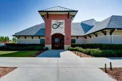

Del Webb's Frisco Lakes is wrapped around the shores of beautiful Lake Lewisville in prestigious Frisco, Texas. Frisco Lakes features two clubhouses, an 18-hole golf course and other world-class amenities. At the heart of this 55+ community is the magnificent 28,000 square-foot Village Center and Sports Complex. The clubhouse includes a state-of-the-art fitness center with the latest cardiovascular and weight training equipment. There is also a large ballroom, arts and crafts studios, card rooms, a library and learning center, a computer lab and billiards hall. The Village Center also boasts an indoor lap pool and spa. Sports enthusiasts enjoy the outdoor resort-style pool and spas, four tennis courts, four bocce ball courts and miles of walking and biking trails.